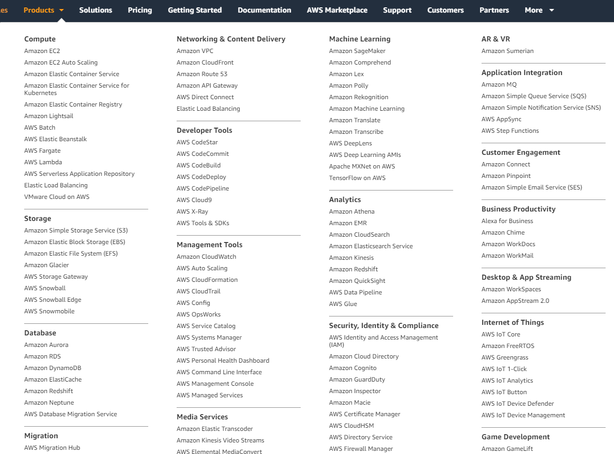
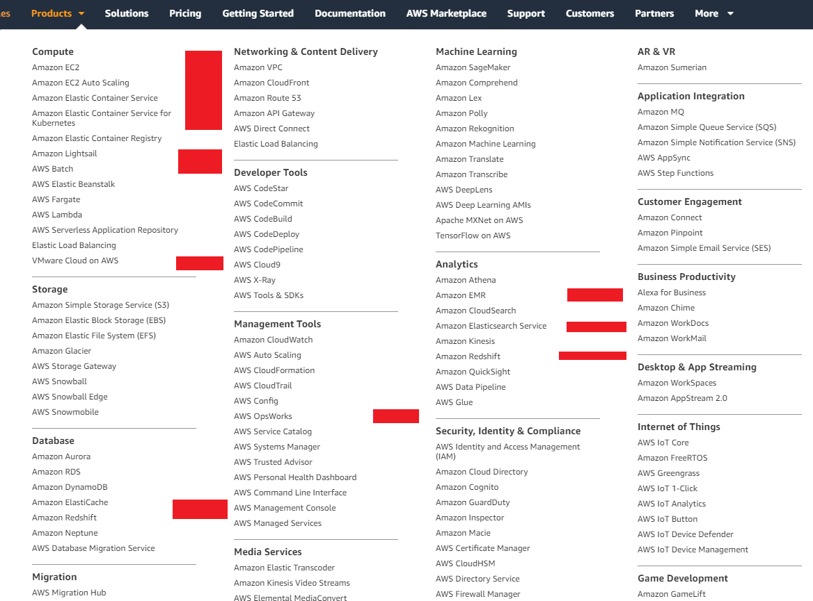
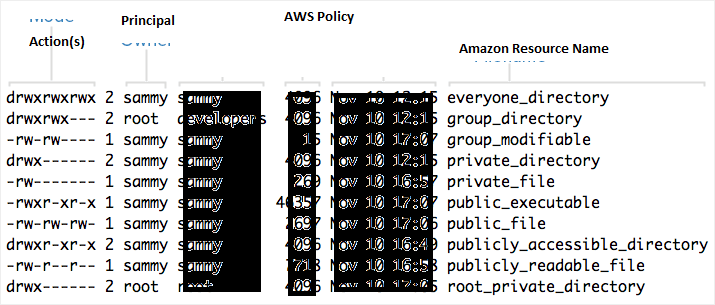
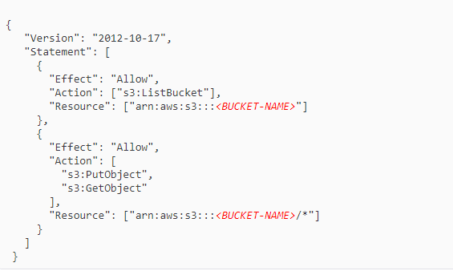

class: center, middle # Cloud study group --- # What is the cloud? [copied from](https://aws.amazon.com/what-is-cloud-computing/) Cloud computing provides a simple way to access servers, storage, databases and a broad set of application services over the Internet. A Cloud services platform such as Amazon Web Services owns and maintains the network-connected hardware required for these application services, while you provision and use what you need via a web application. --- # Who is the cloud? [source](http://www.itmanagerdaily.com/cloud-computing-vendors/) [] --- # Who is the cloud? [source](https://www.srgresearch.com/articles/cloud-growth-rate-increases-amazon-microsoft-google-all-gain-market-share)  --- # Why is the cloud? [copied from](https://aws.amazon.com/what-is-cloud-computing/) - Instead of having to invest heavily in data centers and servers, you can only pay when you consume computing resources - Benefit from massive economies of scale. - Stop guessing capacity. Eliminate guessing on your infrastructure capacity needs. - Increase speed and agility. reduce the time it takes to make those resources available to your developers from weeks to just minutes. - Stop spending money on running and maintaining data centers. - Go global in minutes. Easily deploy your application in multiple regions around the world with just a few clicks. --- # Cloud study: AWS EC2 Compute Amazon Elastic Compute Cloud (Amazon EC2) is a web service that provides secure, resizable compute capacity in the cloud. It is designed to make web-scale cloud computing easier for developers. AWS Virtual Machines --- ### AWS products  --- ### AWS products - EC2 Clusters  services in red are EC2 clusters with specific software installed --- ### AWS products - EC2 - Elastic Container Service - Container orchestration software - Amazon Lightsail - Easy provision of VMs with preinstalled software, wordpress etc. - AWS Batch - Batch computation orchestration software - AWS Elasticache - Managed Redis or Memcached cluster - AWS Redshift - Managed Redshift database (fork of Postgres) - AWS EMR - Managed cluster of Hadoop, Spark, HBase, Presto, Hive - AWS Elasticsearch - Managed elasticsearch cluster --- ### AWS EC2 - Launch Instance Instance - Running VM Concepts: - Instance Type - Size of VM, e.g. t2.nano, t2.micro, t2.small, t2.medium, t2.large, t2.xlarge, t2.2xlarge - Connect - SSH KeyPair (linux) / RDP file (windows) - Network/Subnet/Auto-assign Public IP - Where to deploy? Give public IP? - Storage - Amazon AMI - Instance software (operating system, Linux? Windows? MySQL?, Elasticsearch?) - IAM Role - AWS resource permissions. --- ### Storage Mountable storage, hard drive. Needs to be mounted to EC2 Instance - Amazon Elastic Block Store - Amazon EC2 Instance Store - Amazon Elastic File System (Amazon EFS) --- ### Amazon AMI An Amazon Machine Image (AMI) provides the information required to launch an instance. An AMI includes the following: - A template for the root volume for the instance (for example, an operating system, an application server, and applications) - Launch permissions that control which AWS accounts can use the AMI to launch instances - A block device mapping that specifies the volumes to attach to the instance when it's launched AMIs change over time, each one has ID. Can 'Pre-Bake' private AMIs to launch instances with. --- ### Amazon IAM - Permissions AWS Identity and Access Management (IAM) enables you to manage access to AWS services and resources securely. Using IAM, you can create and manage AWS users and groups, and use permissions to allow and deny their access to AWS resources. Key concepts: - Resource, everything in AWS is resource, has unique AmazonResourceName (ARN). - Users, Groups, Roles, Other (federated user etc) - Actions - Policies All compute in AWS runs 'as something', IAM determines this. --- ### Amazon IAM - User, Groups, Roles User - created on account, can access console, get programatic access to resources, have policies attached. Group - set of users, can have policies attached to. Role - abstract concept, can't access console or get credentials, can have policies attached to. - Have to be assumed by user or service based on assumption policy, users need to use STS. --- ### Amazon IAM - Actions and Policies Action: Every AWS service is a web service which has different 'Actions'. e.g. - S3: PutObject, GetObject, DeleteObject, ListBucket - Lambda: AddPermission, CreateFunction, DeleteFunction, GetFunction Policy links Principal (user, group, role) to actions and resources. --- ### Amazon IAM - Policy analogy <img width="80%" src="LinuxPermission.png" />  --- ### Amazon IAM - Policy example Want Read/Write to S3 bucket (online cloud storage)  --- ### AWS resource provisioning. Resources can be created: - by clicking in AWS console - with aws-cli `aws ec2 run-instances --image-id ami-1a2b3c4d --count 1 --instance-type c3.large --key-name MyKeyPair --security-groups MySecurityGroup` - with language SDK (python boto) `run_instances(image_id, min_count=1, max_count=1, key_name=None, security_groups=None, ...)` with infrastructure as code tool - AWS cloudformation - Hashicorp terraform --- ### AWS resource provisioning - AWS cloudformation ``` "Instance" : { "Type" : "AWS::EC2::Instance", "Properties" : { "KeyName" : { "Ref" : "KeyName" }, "InstanceType" : { "Ref" : "InstanceType" }, "ImageId" : "ami-dfhbwdjhbfw", "NetworkInterfaces" : [ { "SubnetId" : { "Ref" : "PublicSubnet" }, ... } ], "Tags" : [ {"Key": "Name", "Value": "Project_Instance"} ] }}, ``` --- ### AWS resource provisioning - Terraform ``` provider "aws" { region = "eu-west-1" } resource "aws_instance" "web" { ami = "ami-dfhbwdjhbfw" instance_type = "t2.micro" tags { Name = "Project_Instance" } } ``` --- ### Demo? EC2 -> S3 --- ### The end Any questions?